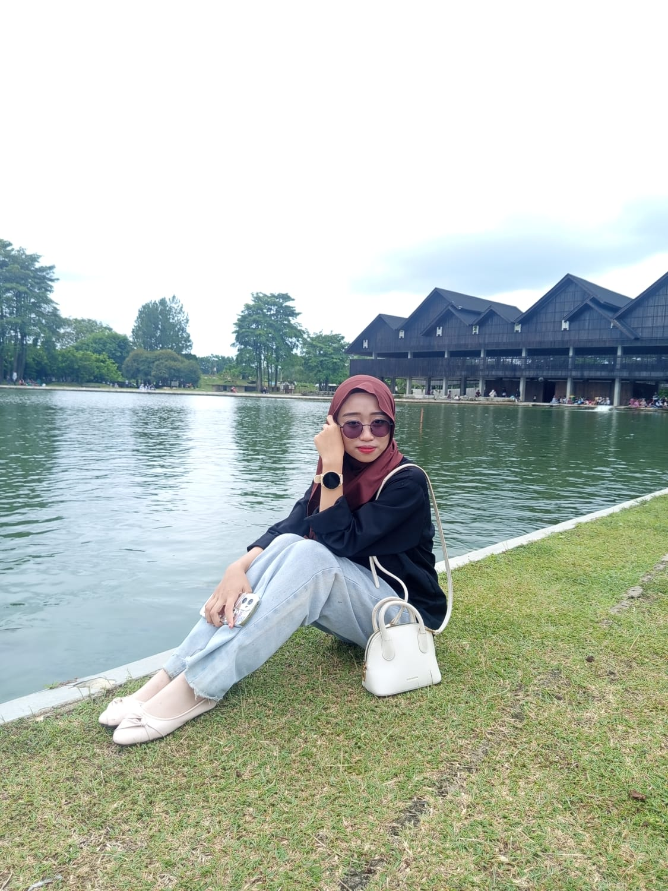
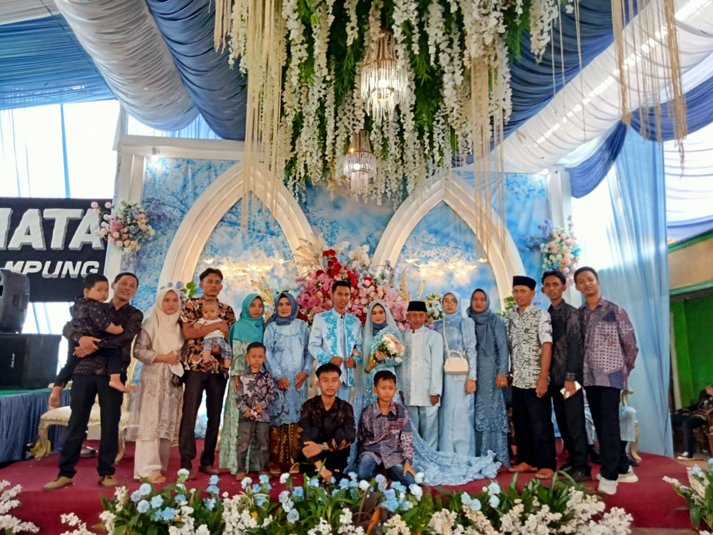

Home
Selamat datang di website pribadi saya. Website ini dibuat sebagai tugas mata kuliah Pemrograman Web.
About
Website ini berisi informasi mengenai diri saya, galeri foto, video kegiatan serta buku tamu.
Website ini dibuat untuk memenuhi tugas mata kuliah Pemrograman Web Semester 2.
Profile

Surya Ningsih
Halo, perkenalkan nama saya Surya Ningsih. Saya berusia 19 tahun dan merupakan mahasiswa Universitas Muhammadiyah Kotabumi Program Studi Sistem dan Teknologi Informasi.saya sedang menempuh pendidikan disemester 2 dan terus belajar mengembangkan kemampuan dibidang teknologi informasi. Saya memiliki minat pada dunia teknologi, desain website dan pemrograman. Website ini saya buat sebagai media untuk memperkenalkan diri sekaligus memenuhi tugas kuliah. Selain mengikuti kegiatan perkuliahan,saya juga memiliki beberapa hobi seperti jalan-jalan dan lari tipis-tipis
Saya berharap ilmu yang saya pelajari selama kuliah dapat menjadi bekal untuk mengembangkan kemampuan di bidang teknologi informasi dan memberikan manfaat bagi banyak orang di masa yang akan datang
Gallery
-

Foto Diri
Foto profil pribadi saya.
-

Hobi
Kegiatan yang saya sukai di waktu luang.
-

Keluarga
Momen bersama keluarga tercinta.
-

Aktivitas
Kegiatan sehari-hari yang saya lakukan.
Video
-
Video Hobi Saya -
Video Aktivitas Saya